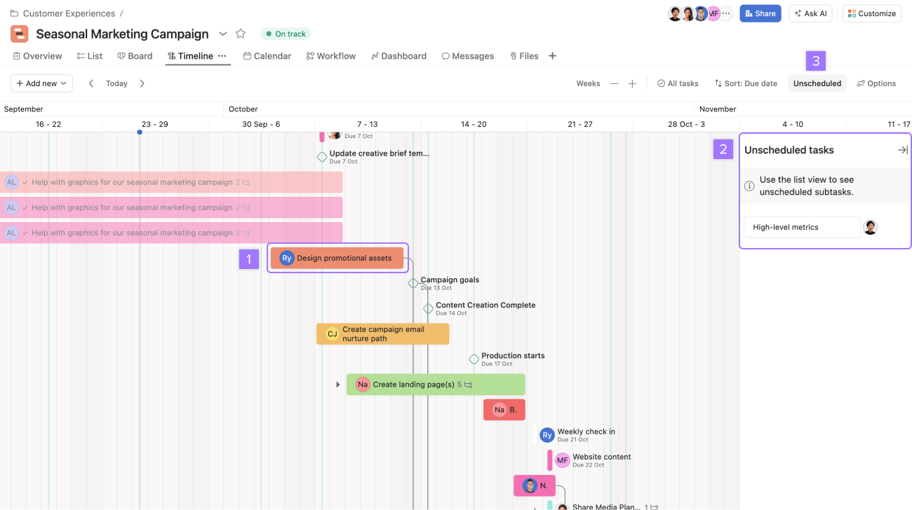
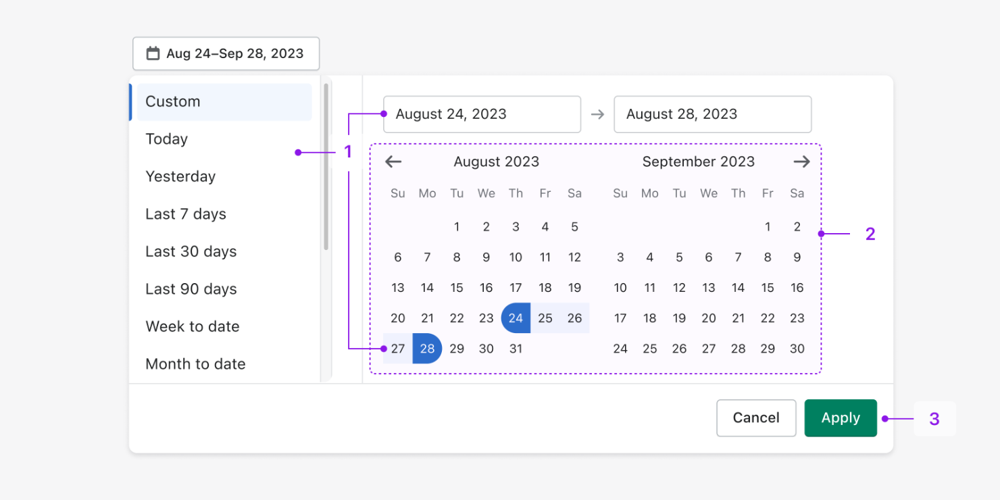
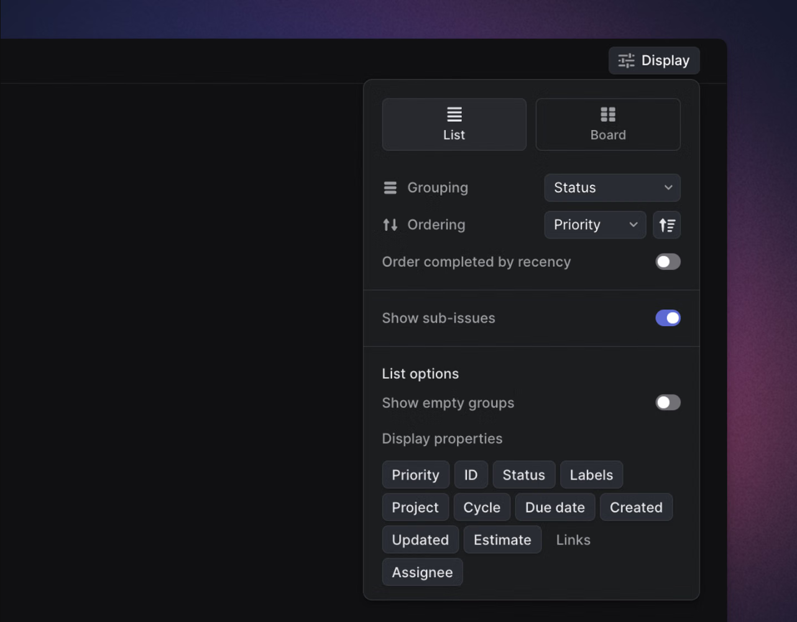
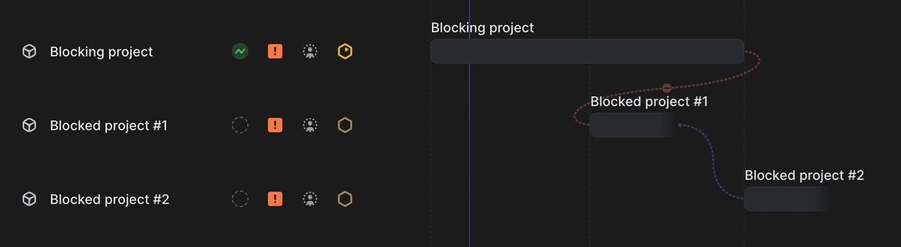
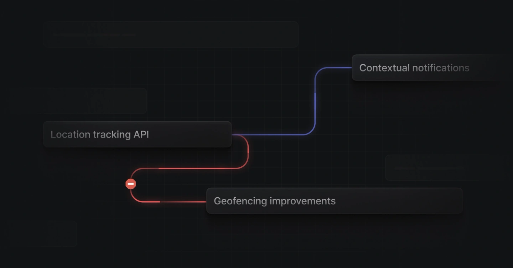

Giữ nguyên hình của phương án A (thanh, hình thoi hạn, ngăn chi tiết vừa duyệt), cải tiến đúng ba khung anh khoanh: thanh đầu màn, lưới lịch và chân. Mọi thứ vẫn bám spec Xếp lịch: chỉ chọn giờ bắt đầu, máy tự ra ngày xong, không chặn gì.
1Thanh đầu màn
Một nút khoảng ngày thay cho cụm ‹ Hôm nay › và Tuần/2 tuần/Tháng. Bấm mở lịch hai tháng để chọn từ ngày đến ngày; cột trái có khoảng chọn sẵn (tuần này, 2 tuần, tháng này, tháng sau, 30 ngày tới). Hai mũi tên hai bên nhảy trọn một khoảng, nút Hôm nay đứng riêng.
Tìm lệnh theo mã, tên, khách; Lọc dùng đúng nút Lọc chuẩn của mọi màn (trạng thái, khách, gấp, vật tư); lọc ở máy chủ.
Hiển thị như Linear: chọn Gọn hay Thoáng, chọn thông tin hiện dưới mỗi thanh.
Hàng tóm tắt ngay dưới: giờ máy chạy trong khoảng đang xem, ca đang bật, và ba nút lọc nhanh "trễ hạn", "có thể xong muộn", "chưa phát hành". Nút nào về 0 thì tự biến mất.
2Lưới lịch
Hàng chờ thành khay gắn cạnh lịch như Asana, bật tắt bằng nút "Chờ xếp lịch". Không còn danh sách nổi che mất mấy ngày cuối.
Rê chuột lên thanh hiện thẻ xem nhanh: khách, máy chính, sản lượng, giờ chạy, vật tư. Không cần mở ngăn.
Thả vào ngày nghỉ: cột đích sáng lên, bong bóng nói rõ lệnh sẽ tự sang ca kế tiếp (spec §3.2).
Thiếu vật tư hiện thẻ đỏ ngay trên dòng (spec có, bản A bỏ). Lệnh bắt đầu trước khoảng xem có dấu ‹ và tên bám mép trái.
Hoàn tác sau mỗi lần thả hoặc dời: băng báo dưới đáy kèm nút Hoàn tác (Ctrl+Z).
3Chân
Chú giải đủ những gì có trên lịch: thêm hạn bị vượt (hình thoi đỏ) và dấu ‹ › còn chạy ngoài khoảng xem.
Phím tắt nằm ở mép phải chân: ◀ ▶ dời 15 phút, Shift ◀ ▶ dời một ca, Ctrl+Z hoàn tác.
Ca đang bật chuyển lên hàng tóm tắt ở đầu màn (spec yêu cầu ca phải thấy ngay đầu màn).
Ảnh tham khảo đã mở và chụp

Asana Timeline (help.asana.com): việc chưa có ngày nằm ở khay gắn bên phải lịch, kéo thả vào ngày; nút Unscheduled trên thanh công cụ bật tắt khay.Thanh công cụ Asana: ‹ Today ›, thu phóng, lọc, sắp xếp, khay, tuỳ chọn, tất cả trên một hàng.

Shopify Polaris, mẫu chọn khoảng ngày: cột khoảng chọn sẵn, hai ô từ ngày đến ngày, lịch hai tháng để chọn khoảng vắt qua hai tháng, bấm Áp dụng mới đổi.

Linear Display (linear.app/docs): sắp theo gì, chọn thông tin hiện trên mỗi dòng bằng các thẻ bật tắt.
Đã chốt (08/10), thước đo là dễ hiểu và dễ dùng
Giữ chọn khoảng ngày tự do, dài nhất 3 tháng, kèm các nút chọn sẵn để thường ngày chỉ một cú bấm. Spec chỉ có ba độ dài cố định.
Khay chờ xếp ở bên phải như Asana. Spec ghi bên trái.
Bỏ "Sắp theo". Lịch luôn xếp theo giờ bắt đầu, lệnh cùng cụm đứng liền nhau. Thêm một kiểu sắp là thêm một thứ phải hiểu, mà khay chờ xếp đã sắp sẵn theo hạn gần nhất.
Giữ thẻ tình trạng vật tư, máy chủ phải trả thêm trường này trong /lich.
Giữ Hoàn tác: kéo nhầm thì bấm một cái là về chỗ cũ, người dùng dám kéo thử.
Lúc kéo dùng cách 2: ghi giờ ở hai đầu thanh bóng.
1. Lúc mở màn, rê chuột lên thanh LSX26-0006
Đầu màn hai hàng: hàng trên là điều khiển, hàng dưới là tóm tắt và lọc nhanh. Thẻ xem nhanh hiện khi rê chuột; bấm vào thanh mới mở ngăn chi tiết (mục 7).
2. Mở khay chờ xếp, kéo LSX26-0008 thả vào Chủ nhật
Khay gắn cạnh lịch nên lịch co lại chứ không bị che. Chuột đang ở CN 11/10 là ngày nghỉ: cột sáng lên, thanh bóng đã nhảy sang T2 12/10 14:00. Bong bóng đen bỏ hẳn: giờ bắt đầu và giờ xong ghi ngay hai đầu thanh bóng, khoảng dư nằm trên đường chấm tới hạn (cách 2 bên dưới).
Ba cách báo lúc kéo, đã chốt cách 2
Cùng một lúc kéo LSX26-0008 thả vào CN 11/10. Ba cách chỉ khác chỗ đặt chữ; nội dung giống nhau: xưởng nghỉ nên tự sang ca kế tiếp, bắt đầu lúc nào, xong lúc nào, dư bao nhiêu so với hạn.
1. Cờ trên trục
Giờ bắt đầu và giờ xong thành hai cờ xanh trên trục ngày như viên "JUN 18" của Linear; cả khoảng lệnh chiếm sáng nhạt từ trên xuống. Mắt phải ngước lên trục.
2. Ghi ở hai đầu thanh đã chốt
Giờ bắt đầu ghi ngay trước đầu thanh bóng, giờ xong ngay sau đuôi thanh, khoảng dư nằm trên đường chấm tới hạn. Chữ đứng đúng chỗ mắt đang nhìn khi kéo, không che dòng nào.
3. Thẻ trắng cạnh chuột
Như bong bóng cũ nhưng nền trắng, chia dòng có nhãn, dải vàng báo ngày nghỉ. Đọc rõ nhất nhưng vẫn là một hộp nổi che lịch bên dưới.
Chỉ còn hai lệnh trễ. Chế độ Thoáng thêm một hàng thông tin dưới thanh (khách, máy chính, sản lượng). Băng dưới đáy là lần thả ở bước 2, bấm Hoàn tác là trả lệnh về khay.
4. Bấm nút khoảng ngày
Khuôn Polaris: chọn nhanh ở cột trái, hoặc gõ hai ô từ ngày đến ngày, hoặc bấm hai ngày trên lịch hai tháng. Chủ nhật chữ nhạt, chấm cam dưới ngày hôm nay. Bấm Áp dụng lịch mới đổi; mũi tên hai bên nút sau đó nhảy đúng 14 ngày.
5. Hai lệnh dính công đoạn với nhau
Hệ thống đang có gì, bàn xếp lịch đang thiếu gì
Code đã có ba kiểu lệnh dính nhau, và phát hành một lệnh là phát hành cả cụm:
Phụ thuộc chéo (bảng lsx_cong_doan_phu_thuoc): một bước của lệnh này chờ một bước của lệnh kia. Ví dụ ruột sách chỉ vào bìa được khi bìa đã cán màng xong.
Bài ghép: nhiều lệnh in chung một tờ, nên bước in, CTP, cán, bế là MỘT lượt máy chung.
Cùng nhóm thành phẩm trong một đơn.
Nhưng máy tính ngày xong (trai_lich.py) chỉ đi theo thứ tự bước của riêng từng lệnh, không xét lệnh kia. Hệ quả:
ruột được tính vào bìa trước khi bìa xong, ngày xong của ruột sớm hơn thực tế;
hai lệnh in chung một tờ lại có hai giờ in khác nhau;
bấm Phát hành một lệnh thì lệnh kia cũng xuống xưởng mà màn không nói gì.

Linear (linear.app/docs/project-dependencies): đường chấm cong nối đuôi việc chặn tới đầu việc bị chặn. Đúng thứ tự thì đường xanh; việc sau bắt đầu trước khi việc trước xong thì đường đỏ vòng ngược kèm dấu cấm.

5a. Giữ cách tính hiện tại, chỉ vẽ ra cho thấy
Lệnh cùng cụm đứng sát nhau dưới một hàng tiêu đề cụm. Đường chấm đỏ có dấu cấm nghĩa là ruột đang được tính vào bìa lúc T6 09/10 14:00, trong khi bìa T7 10/10 16:00 mới xong. Hai bước in chung viền tím, đường chéo nối hai giờ in lệch nhau. Ngày xong của ruột vẫn sai, người điều độ phải tự kéo cho khớp.
5b. Đã chốt: ngày xong tính luôn phần chờ lệnh kia
Vẫn chỉ lưu một giờ bắt đầu cho mỗi lệnh, nhưng khi trải các bước:
• bước có phụ thuộc chéo thì đợi bước nguồn của lệnh kia xong;
• bước in chung thì đợi tới khi cả hai lệnh cùng tới được bước đó.
Phần đợi là đoạn vàng "chờ" trên thanh. Ruột tự ra ngày xong đúng (T7 10/10 21:00) và hai lệnh tem in chung đúng một lượt. Kéo bìa sớm lên thì ruột tự xong sớm theo, kéo bìa lùi thì ruột tự chờ lâu hơn.
Ngăn chi tiết của lệnh trong cụm nằm ở mục 7.
Đã chốt cho mục 5
5b. Máy tính ngày xong trải các lệnh trong một cụm cùng nhau theo thứ tự bước của cả cụm. Không thêm cột nào, chỗ chờ vẫn là số dẫn xuất.
Dòng của một cụm luôn đứng liền nhau: cụm xếp theo giờ bắt đầu sớm nhất, trong cụm xếp theo giờ bắt đầu.
Không làm Shift + kéo dời cả cụm. Thao tác ẩn thì không ai biết mà dùng. Nhờ 5b, kéo lệnh đi trước là lệnh đi sau tự chờ theo, nên không cần thao tác riêng.
Nút ghi "Phát hành cả cụm, N lệnh". Không đổi luật, code vốn phát hành cả cụm, chỉ là nói cho người bấm biết.
6. Trục ngày đọc đủ từ lịch làm việc
Lịch làm việc đang có gì, bàn xếp lịch đang nhận gì
Màn Lịch làm việc bên Chấm công khai đủ ba thứ: tuần làm việc chuẩn (T2 đến T7 làm, CN nghỉ), bảng Ngày lễ và làm bù (ngày, loại, tên, hưởng lương), và ca của xưởng. Máy tính ngày xong đã dùng cả ba, nên thanh lệnh tự nhảy qua ngày lễ.
Nhưng thứ máy chủ gửi sang màn xếp lịch (ngay_nghi trong /lich) chỉ là danh sách ngày nghỉ trần. Hệ quả trên trục:
không có tên ngày lễ, người điều độ thấy cột xám mà không biết vì sao thanh đứt ở đó;
nghỉ lễ và nghỉ Chủ nhật trông như nhau;
ngày làm bù (CN đi làm) không có dấu gì, nhìn như ngày thường nên dễ tưởng nhầm là lỗi;
dòng ca ở đầu màn đang ghi tay, không đọc từ tuần làm việc chuẩn.
6a. Khoảng 2 tuần có lễ 30/4 và 1/5
Ba ngày lễ lấy đúng từ bảng Ngày lễ và làm bù đang khai. Ngày CN 10/05 làm bù là ví dụ thêm để thấy cách hiện, bảng thật năm 2026 chưa có ngày làm bù nào.
• Chủ nhật: tô xám phẳng từ trục xuống hết các dòng, dưới số ngày ghi "Nghỉ tuần".
• Ngày lễ: tô sọc chéo, đậm hơn Chủ nhật một bậc, có thẻ "Nghỉ lễ" viền cam đất và tên lễ ngay dưới, cùng màu với màn Lịch làm việc.
• Làm bù: cột để trắng như ngày làm, có thẻ "Làm bù" màu tím giống màn Lịch làm việc.
Thanh LSX26-0031 đứt hai ngày lễ rồi chạy tiếp T7 02/05. LSX26-0032 vì vướng lễ mà trễ hạn giao 30/04. LSX26-0033 chạy qua đúng ngày CN làm bù.
6b. Khoảng 1 tháng: cột hẹp, bỏ tên, giữ thẻ
Một ngày chỉ còn khoảng 40px, tên lễ không đủ chỗ. Trục chỉ giữ thẻ, hai ngày lễ liền nhau gộp một thẻ "Nghỉ lễ 2 ngày". Chủ nhật bỏ chữ "Nghỉ tuần", chỉ còn tô xám. Rê chuột vào ngày 30/04 thì ra thẻ nói đủ: lễ gì, xưởng có chạy không, lệnh nào bị lễ cắt ngang và chạy tiếp lúc nào.
Đã chốt cho mục 6
Máy chủ gửi thêm, không thêm bảng hay cột./lich trả thêm danh sách ngày đặc biệt trong khoảng (ngày, loại, tên), đọc cùng nguồn special_days và work_calendar_config mà máy tính ngày xong đang dùng.
Không hiện "hưởng lương". Đó là chuyện tính công và lương, người điều độ chỉ cần biết xưởng có chạy hay không.
Loại "Nghỉ, làm 1×" bên Chấm công tô như nghỉ lễ nhưng thẻ ghi "Nghỉ" kèm tên, vì đó không phải lễ.
Đầu màn chỉ ghi giờ ca, đọc từ ca xưởng thay vì gõ tay. Không thêm bảy ô thứ: Chủ nhật đã tô xám ngay trên trục, ghi lại ở đầu màn là nói hai lần.
Ngày làm bù chưa có trong bảng 2026, CN 10/05 trong mockup chỉ là ví dụ. Khi Nhân sự khai thì trục tự hiện, không phải làm gì thêm.
7. Bấm vào một lệnh: ngăn chi tiết
Khung giữ nguyên bản anh đã duyệt, sửa bốn chỗ và thêm phần nối với lệnh khác
Nối công đoạn với lệnh khác nằm ngay trong Quy trình. Bước nào dính lệnh khác thì có thêm một dải bên dưới thẻ bước, nói rõ dính với lệnh nào, bước nào, lúc nào, và có nút mở lệnh kia. Ba kiểu, ba màu, cùng màu với đường nối trên lịch ở mục 5:
vàng: bước này chờ một bước của lệnh khác;
xanh: một lệnh khác đang chờ bước này;
tím: bước này in chung một lượt với lệnh khác trong bài ghép.
Thẻ "Phát hành cùng nhau" liệt kê các lệnh trong cụm, vì sao dính, chỉ sang bước nối. Nút chính ghi "Phát hành cả cụm, 2 lệnh".
Từ bắt đầu tới xong tách riêng phần "Chờ lệnh khác", để thấy ngày xong muộn vì đâu.
Ngày nghỉ có tên lễ như trục ở mục 6, dòng này chỉ hiện khi lệnh chạy qua ngày nghỉ.
Vật tư thiếu ghi ngay ở ô vật tư đó, đủ thì không ghi gì.
Hoàn tác ngay cạnh nút dời 15 phút, hiện sau khi vừa đổi giờ bắt đầu.
7a. Bấm thanh ruột LSX26-0011
Lịch phía sau là cụm ở mục 5b. Vừa bấm "15 phút →" nên giờ bắt đầu từ 13:45 thành 14:00 và có nút Hoàn tác. Bước 5 Vào bìa khâu gáy chờ bìa LSX26-0012 cán màng xong, nên trong "Từ bắt đầu tới xong" có phần chờ riêng. Ruột chạy từ thứ 3 tới thứ 7 nên không có dòng Ngày nghỉ.
7b. Cùng ngăn đó, ở ba lệnh khác
Chỉ trích khối thay đổi, phần còn lại của ngăn giống 7a.
Dải nối chỉ để xem. Muốn sửa bước nào chờ bước nào hay gộp bài ghép thì mở lệnh, sửa ở màn Lệnh sản xuất như hiện nay; màn xếp lịch không sửa quy trình.